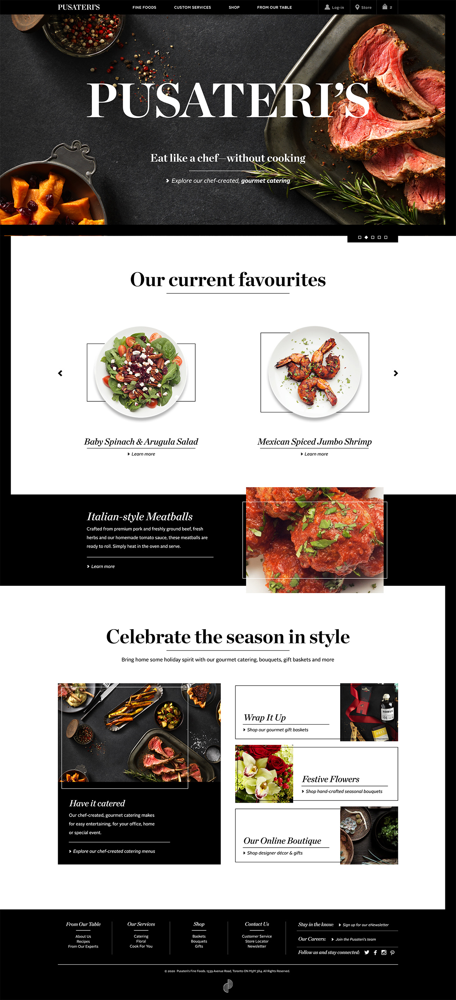
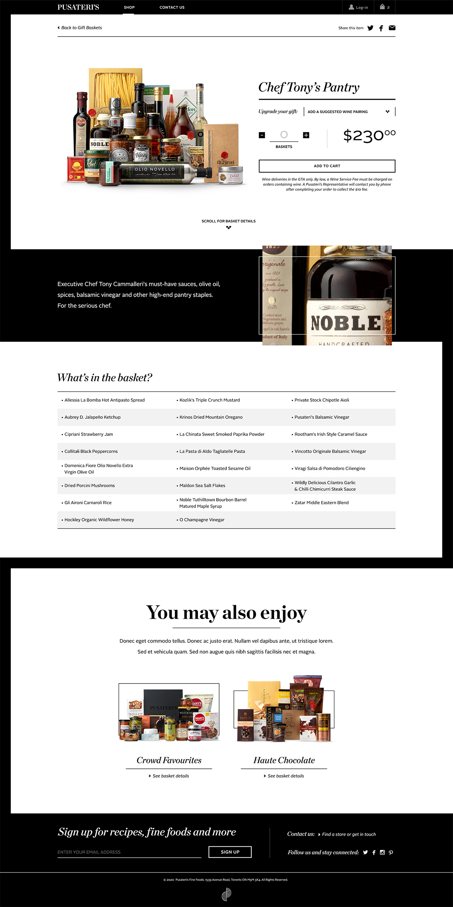
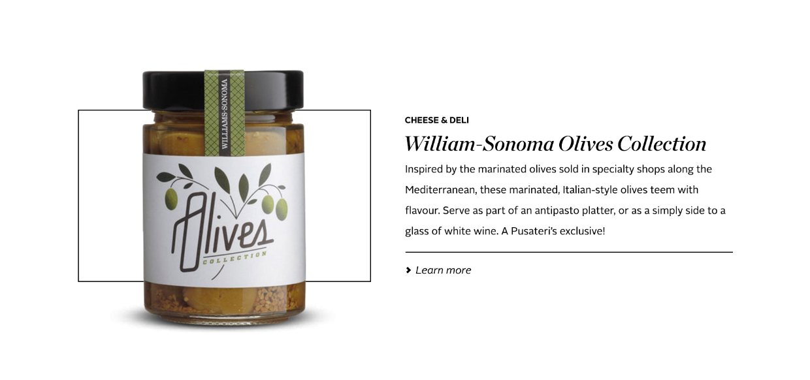

Launching a luxury grocery retailer – a niche market, online isn't a simple flip of the switch. Communicating a consistent feeling of affluence around an array of ingredients and foods from around the world required a heavy use of brand style and voice in order to keep the site experience luxurious.
In order to create visual interest within a minimal black and white palette, we designed a system of thick and thins that established a sense hierarchy for the site. As well, we used a combination of overlapping and underlapping lines on product visuals to create depth.
Establishing a consistent photography style for the brand was instrumental in separating Pusateri's from the competition. Going against the typical three-quarter shots reserved for grocery and food imagery, all products shots were taken straight on with a focus on the labels in order to hero the products rather than the foods themselves.
Brand photography was taken from above of meals in-progress, always with a minimal yet important use of mess. This subtle addition ensured the photos felt real and as opposed to staged, while adding warmth and emotion.
Due to the black and white nature of the brand, we dialed up the saturation of the imagery and heightened the dark edges in order to bring an overall richness to the imagery.
 